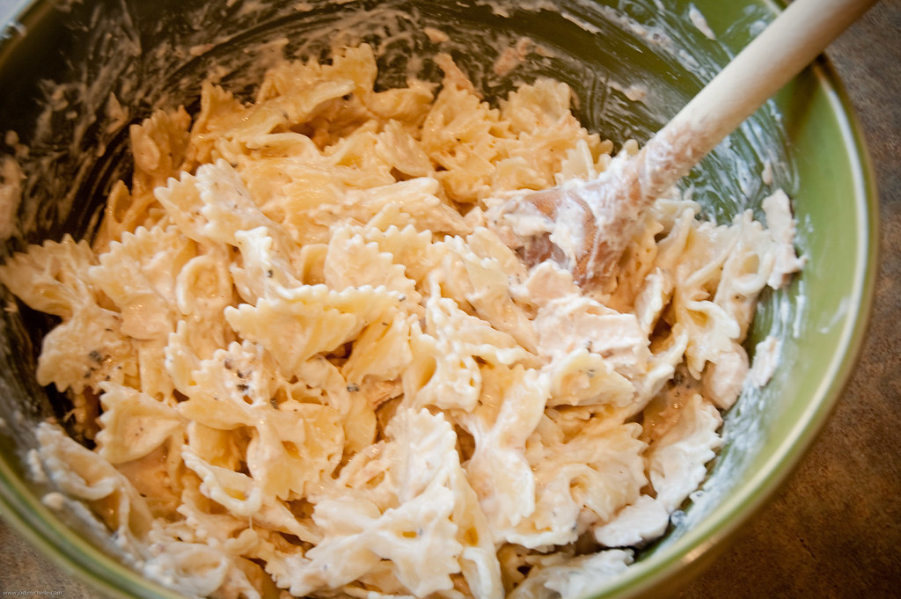

Home
Tuna Pasta

Description
This tuna pasta recipe is a quick and satisfying dish that's perfect
for busy weeknights or a cozy weekend meal. It features tender pasta tossed with
flaky canned tuna, garlic, and olive oil, all brought together with a touch of lemon
juice and fresh herbs for a bright, flavorful finish. The simplicity of the
ingredients allows the natural richness of the tuna to shine, while the
addition of capers or chili flakes can add a pleasant kick or briny contrast
if desired.
What makes this recipe especially appealing is its balance of convenience
and taste. Using pantry staples, it comes together in under 30 minutes without
sacrificing flavor. Whether you choose to add a sprinkle of Parmesan or keep it
light and dairy-free, this dish is endlessly adaptable and can be served warm or
as a chilled pasta salad. It's a no-fuss meal that delivers comfort and elegance
with minimal effort.
Ingredients
- 8 oz pasta (spaghetti, penne, or your choice)
- 1 canned tuna in olive oil, drained
- 2 cloves garlic, minced
- 1/2 teaspoon red pepper flakes (optional)
- 1 tablespoon capers (optional)
- Juice of half a lemon
- Salt and freshly ground black pepper, to taste
- Fresh parsley, chopped (for garnish)
- Grated parmesan cheese (optional, to taste)
Steps
- Cook the pasta
- Bring a large pot of salted water to a boil.
- Add the pasta and cook until al dente (check the package
for timing)
- Drain the pasta and rinse briefly under cool
water to stop the cooking.
- Set aside to cool slightly while you prepare the rest.
- Prepare the tuna mixture
- Open and drain the canned tuna (preferably tuna in olive
oil for flavor).
- Place the tuna in a large mixing bowl.
- Use a fork to flake it into smaller pieces for
even distribution.
- Combine tuna and flavorings
- Add the minced garlic to the bowl with the tuna.
- Stir in the red pepper flakes (if using) and the capers.
- Squeeze in the juice of half a lemon.
- Season with a pinch of salt and freshly ground black pepper.
- Mix everything together gently to combine without
breaking up the tuna too much.
- Mix with pasta
- Add the cooked and cooled pasta to the tuna mixture.
- Toss well to coat the pasta with the tuna and flavorings.
- Taste and adjust seasoning as needed (add more lemon, salt,
or pepper if desired).
- Finish and serve
- Sprinkle chopped fresh parsley over the top for a fresh touch.
- Add grated parmesan cheese, if you like, for extra richness.
- Serve immediately at room temperature, or chill in the fridge
for 30 to 60 minutes for a cold pasta salad.
Tips
- Serve warm or at room temperature.
- Add some chopped cherry tomates or olives for extra flavor if you have
have them on hand